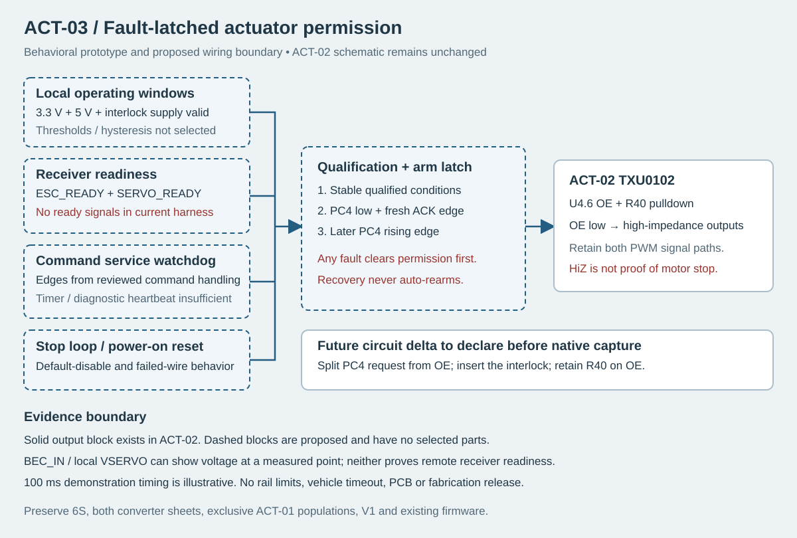

Recover power. Keep the actuator disarmed.
Explore a fault-latched arm contract before building its circuit. Power or command recovery requires a deliberate acknowledge and a new arm edge. The existing ACT-02 schematic is preserved.
1. Replay a fault case
Start locked or replay a deterministic example.
Blue trace = proposed OE permission. High impedance is not proof that a motor has stopped.
2. Change the assumptions
Two separate service pulses and a full stable interval are required. Acknowledge with arm low, then raise arm. Any failed permission or expired service locks the model.
A periodic interrupt can keep strobes alive without valid commands. Try the blind-spot scenario; the watchdog cannot inspect radio packets.
3. Proposed circuit boundary

Preserved ACT-02 native schematic · Exact captured pin memberships · Behavioral contract

What the current harness reveals
| Point | Available evidence | Missing evidence |
|---|---|---|
| J2.2 BEC_IN | BEC source connection; D9.2 only | ESC control-power and initialized state; no MCU sense path |
| J3.2 VSERVO | Local servo supply connection | Remote terminal voltage / receiver readiness; no MCU sense path |
| U2.4 / U3.16 | Converter PG / PGOOD pins exist | Both currently no-connect; no complete rail supervisor |
| PC4 / U4.6 | Direct request to OE with R40 pulldown | Independent fault latch and watchdog gate |
BEC_ONLY fits D9; ONBOARD fits D4. Both are DNP in the unselected master. VSERVO does not prove ESC readiness in either variant.
4. Event record
Latest 12 sampled events. Analog glitches between samples and hardware propagation are outside this model.
| ms | Event | State |
|---|
Next circuit packet
Implement and verify the fault-dominant latch/OE gate on a new ACT-02 copy. Declare the PC4-to-OE split, preserve R40 at OE, and keep unimplemented qualification inputs default-disabled. Select exact latch/gate parts only after checking power-up, asynchronous fault priority, partial power and recovery/removal limits.
Receiver-ready interfaces, rail supervision and command watchdog timing remain separate acceptance work. Real ESC/BEC/servo identities and powered-off input limits are required before release.